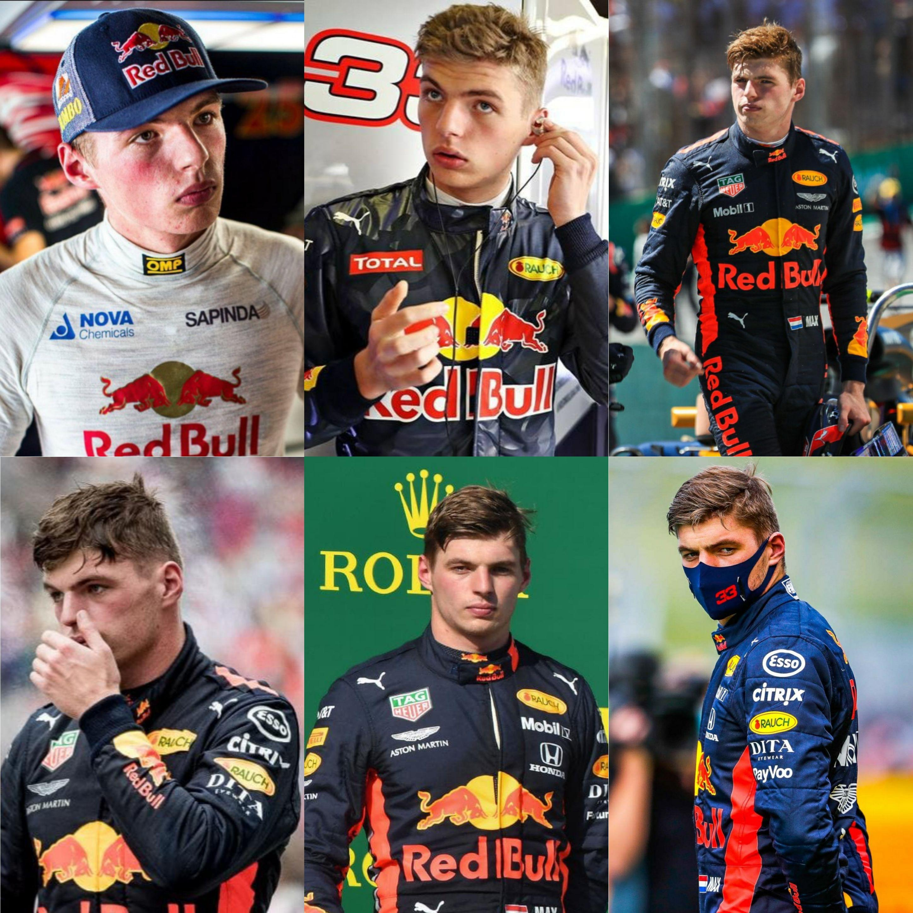
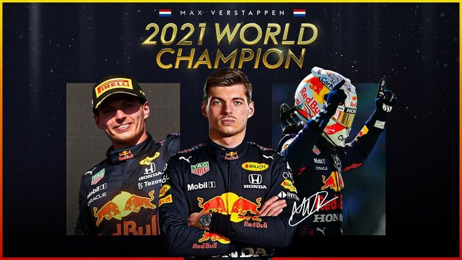

Este artículo destaca el dominio de Verstappen durante la temporada 2023 de la Fórmula 1. El piloto holandés no solo aseguró su tercer título mundial consecutivo, sino que también rompió sus propios récords con una impresionante cantidad de 19 victorias en la temporada. La consistencia y el rendimiento de Verstappen a lo largo del año, sumado a su habilidad para conducir bajo presión, consolidaron su estatus como uno de los mayores talentos de la F1.
La evolución de Max Verstappen: De novato a campeón

Este artículo recorre la carrera de Verstappen desde su debut en 2015 hasta su ascenso al campeonato mundial. Su audaz paso a Red Bull Racing en 2016, su victoria récord en el Gran Premio de España de ese mismo año, y su continuo desarrollo hasta convertirse en contendiente al título son algunos de los puntos que se destacan. Además, se reflexiona sobre cómo Verstappen ha madurado como piloto y líder dentro de su equipo.
El campeonato histórico de Max Verstappen en 2021

Este artículo se enfoca en la histórica temporada 2021 de Verstappen, cuando logró su primer título mundial tras una dramática última carrera en Abu Dabi. El artículo analiza la feroz rivalidad entre Verstappen y Lewis Hamilton, culminando en el controvertido desenlace de esa carrera. La capacidad de Verstappen para mantener la calma y aprovechar su oportunidad en una situación de alta tensión le permitió hacer historia en la F1.